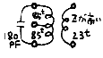
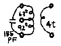
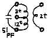
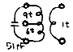
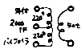
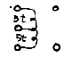
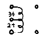
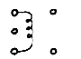
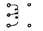
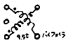

| ホーム |
第8表 特殊コイル
07M450 10M455 7M10.7 10M10.7 07S40K セラミックフィルタフォロー用、普通の455用としてもOK。 455kHz用
IFT10.7MHz用
IFT10.7MHz用
IFTJJY受信用、
VLF用としても広範囲に使用できます。     FINAL21 FINAL50 VXO-2 VFO-5 QH-7 21,24,28MHzのQRP用ファイナルコイル。 50MHzのQRP用ファイナル
コイル。VXO-50の改良型、インダクタンスの変化は場をひろげました。 5-7MHz用の発振コイル。 LA-1600用として最適です。 7MHz用クワッドレチャーハイブリッドコイル。
RF PSN用。     新製品 07S-BCL BCバンドのラジオをクリコンの親受信機にするためのコイルす。 1個180円 詳細はここをクリッ クしてください。
ホ−ム